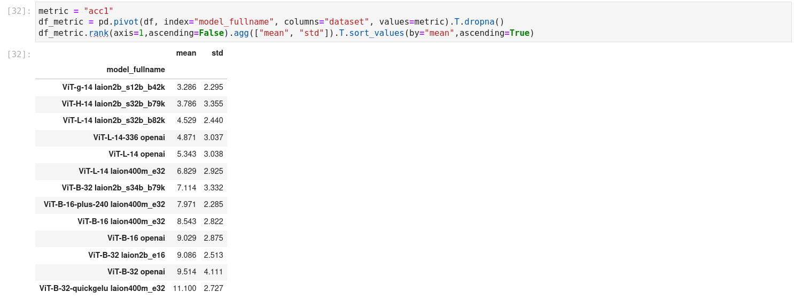

InternVL for Zero-Shot Image Classification & Image-Text Retrieval#
This folder contains the implementation of InternVL for zero-shot image classification and zero-shot image-text retrieval, which corresponds to Section 4.3 of our InternVL 1.0 paper. We mainly use CLIP Benchmark to evaluate the performance of InternVL. Thanks for this great work.
In this part, we evaluate the inherent capabilities of InternVL 1.0 on various vision-language tasks.
Installation#
First, follow the installation guide to perform some basic installations.
In addition, using this codebase requires executing the following steps:
Install other requirements:
pip install -r requirements.txt
Install
clip_benchmarkusing development mode:python setup.py develop # You can also add the current directory to PYTHONPATH instead. export PYTHONPATH="${PYTHONPATH}:$(pwd)"
Data Preparation#
This codebase will automatically download the required dataset. If the dataset fails to download automatically, please refer to this file for manual downloading.
Model Preparation#
model name |
type |
download |
size |
|---|---|---|---|
InternVL-C-13B-224px |
pytorch |
🤗 HF link |
25.4 GB |
InternVL-14B-224px |
huggingface |
🤗 HF link |
27.7 GB |
Please download the above model weights and place them in the pretrained/ folder.
You can download either the PyTorch version or the Hugging Face version based on your needs.
cd pretrained/
wget https://huggingface.co/OpenGVLab/InternVL/resolve/main/internvl_c_13b_224px.pth
# pip install -U huggingface_hub
huggingface-cli download --resume-download --local-dir-use-symlinks False OpenGVLab/InternVL-14B-224px --local-dir internvl_14b_224px
The directory structure is:
pretrained
├── internvl_c_13b_224px.pth
└── internvl_14b_224px/
Evaluation: Zero-Shot Image Classification#
ImageNet variants and ObjectNet#
model name |
IN-1K |
IN-A |
IN-R |
IN-V2 |
IN-Sketch |
ObjectNet |
∆ |
average |
|---|---|---|---|---|---|---|---|---|
InternVL-C |
83.2 |
83.8 |
95.5 |
77.3 |
73.9 |
80.6 |
0.8 |
82.4 |
[InternVL-C] ImageNet-1K val
CUDA_VISIBLE_DEVICES=0 python3 clip_benchmark/cli.py eval --model_type internvl --language "en" \
--task "zeroshot_classification" --dataset "imagenet1k" --dataset_root ./data/imagenet-1k/ \
--model internvl_c_classification --pretrained ./pretrained/internvl_c_13b_224px.pth --output result.json
Expected results:
{"dataset": "imagenet1k", "model": "internvl_c_classification", "pretrained": "./pretrained/internvl_c_13b_224px.pth", "task": "zeroshot_classification",
"metrics": {"acc1": 0.83178, "acc5": 0.97322, "mean_per_class_recall": 0.83204}, "language": "en"}
[InternVL-C] ImageNet-A
CUDA_VISIBLE_DEVICES=0 python3 clip_benchmark/cli.py eval --model_type internvl --language "en" \
--task "zeroshot_classification" --dataset "imagenet-a" --dataset_root ./data/imagenet-a/ \
--model internvl_c_classification --pretrained ./pretrained/internvl_c_13b_224px.pth --output result.json
Expected results:
{"dataset": "imagenet-a", "model": "internvl_c_classification", "pretrained": "./pretrained/internvl_c_13b_224px.pth", "task": "zeroshot_classification",
"metrics": {"acc1": 0.8377333333333333, "acc5": 0.9558666666666666, "mean_per_class_recall": 0.8183934468491632}, "language": "en"}
[InternVL-C] ImageNet-R
CUDA_VISIBLE_DEVICES=0 python3 clip_benchmark/cli.py eval --model_type internvl --language "en" \
--task "zeroshot_classification" --dataset "imagenet-r" --dataset_root ./data/imagenet-r/ \
--model internvl_c_classification --pretrained ./pretrained/internvl_c_13b_224px.pth --output result.json
Expected results:
{"dataset": "imagenet-r", "model": "internvl_c_classification", "pretrained": "./pretrained/internvl_c_13b_224px.pth", "task": "zeroshot_classification",
"metrics": {"acc1": 0.9549666666666666, "acc5": 0.9918333333333333, "mean_per_class_recall": 0.9460205918105684}, "language": "en"}
[InternVL-C] ImageNet-V2
CUDA_VISIBLE_DEVICES=0 python3 clip_benchmark/cli.py eval --model_type internvl --language "en" \
--task "zeroshot_classification" --dataset "imagenetv2" --dataset_root ./data/imagenetv2/ \
--model internvl_c_classification --pretrained ./pretrained/internvl_c_13b_224px.pth --output result.json
Expected results:
{"dataset": "imagenetv2", "model": "internvl_c_classification", "pretrained": "./pretrained/internvl_c_13b_224px.pth", "task": "zeroshot_classification",
"metrics": {"acc1": 0.7726, "acc5": 0.9468, "mean_per_class_recall": 0.7738000000000001}, "language": "en"}
[InternVL-C] ImageNet-Sketch
CUDA_VISIBLE_DEVICES=0 python3 clip_benchmark/cli.py eval --model_type internvl --language "en" \
--task "zeroshot_classification" --dataset "imagenet_sketch" --dataset_root ./data/imagenet-sketch/ \
--model internvl_c_classification --pretrained ./pretrained/internvl_c_13b_224px.pth --output result.json
Expected results:
{"dataset": "imagenet_sketch", "model": "internvl_c_classification", "pretrained": "./pretrained/internvl_c_13b_224px.pth", "task": "zeroshot_classification",
"metrics": {"acc1": 0.7385879070133035, "acc5": 0.9199827074613374, "mean_per_class_recall": 0.7386403921568627}, "language": "en"}
[InternVL-C] ObjectNet
CUDA_VISIBLE_DEVICES=0 python3 clip_benchmark/cli.py eval --model_type internvl --language "en" \
--task "zeroshot_classification" --dataset "objectnet" --dataset_root ./data/objectnet-1.0/ \
--model internvl_c_classification --pretrained ./pretrained/internvl_c_13b_224px.pth --output result.json
Expected results:
{"dataset": "objectnet", "model": "internvl_c_classification", "pretrained": "./pretrained/internvl_c_13b_224px.pth", "task": "zeroshot_classification",
"metrics": {"acc1": 0.8059114891784215, "acc5": 0.9387853989447615, "mean_per_class_recall": 0.797040815749882}, "language": "en"}
Multilingual ImageNet-1K#
model name |
IN-1K (EN) |
IN-1K (ZH) |
IN-1K (JP) |
IN-1K (AR) |
IN-1K (IT) |
average |
|---|---|---|---|---|---|---|
InternVL-C |
83.2 |
64.5 |
61.5 |
44.9 |
65.7 |
64.0 |
[InternVL-C] ImageNet-1K val (ZH, Chinese)
CUDA_VISIBLE_DEVICES=0 python3 clip_benchmark/cli.py eval --model_type internvl --language "cn" \
--task "zeroshot_classification" --dataset "imagenet1k" --dataset_root ./data/imagenet-1k/ \
--model internvl_c_classification --pretrained ./pretrained/internvl_c_13b_224px.pth --output result.json
Expected results:
{"dataset": "imagenet1k", "model": "internvl_c_classification", "pretrained": "./pretrained/internvl_c_13b_224px.pth", "task": "zeroshot_classification",
"metrics": {"acc1": 0.6446, "acc5": 0.87842, "mean_per_class_recall": 0.6444200000000001}, "language": "cn"}
[InternVL-C] ImageNet-1K val (JP, Japanese)
CUDA_VISIBLE_DEVICES=0 python3 clip_benchmark/cli.py eval --model_type internvl --language "jp" \
--task "zeroshot_classification" --dataset "imagenet1k" --dataset_root ./data/imagenet-1k/ \
--model internvl_c_classification --pretrained ./pretrained/internvl_c_13b_224px.pth --output result.json
Expected results:
{"dataset": "imagenet1k", "model": "internvl_c_classification", "pretrained": "./pretrained/internvl_c_13b_224px.pth", "task": "zeroshot_classification",
"metrics": {"acc1": 0.61488, "acc5": 0.81146, "mean_per_class_recall": 0.6140599999999999}, "language": "jp"}
[InternVL-C] ImageNet-1K val (AR, Arabic)
CUDA_VISIBLE_DEVICES=0 python3 clip_benchmark/cli.py eval --model_type internvl --language "ar" \
--task "zeroshot_classification" --dataset "imagenet1k" --dataset_root ./data/imagenet-1k/ \
--model internvl_c_classification --pretrained ./pretrained/internvl_c_13b_224px.pth --output result.json
Expected results:
{"dataset": "imagenet1k", "model": "internvl_c_classification", "pretrained": "./pretrained/internvl_c_13b_224px.pth", "task": "zeroshot_classification",
"metrics": {"acc1": 0.4486, "acc5": 0.66418, "mean_per_class_recall": 0.44764}, "language": "ar"}
[InternVL-C] ImageNet-1K val (IT, Italian)
CUDA_VISIBLE_DEVICES=0 python3 clip_benchmark/cli.py eval --model_type internvl --language "it" \
--task "zeroshot_classification" --dataset "imagenet1k" --dataset_root ./data/imagenet-1k/ \
--model internvl_c_classification --pretrained ./pretrained/internvl_c_13b_224px.pth --output result.json
Expected results:
{"dataset": "imagenet1k", "model": "internvl_c_classification", "pretrained": "./pretrained/internvl_c_13b_224px.pth", "task": "zeroshot_classification",
"metrics": {"acc1": 0.65686, "acc5": 0.85254, "mean_per_class_recall": 0.6557799999999999}, "language": "it"}
Other Datasets#
[InternVL-C] CIFAR-10
CUDA_VISIBLE_DEVICES=0 python3 clip_benchmark/cli.py eval --model_type internvl --language "en" --task "zeroshot_classification" \
--dataset "cifar10" --dataset_root ./data/ --model internvl_c_classification \
--pretrained ./pretrained/internvl_c_13b_224px.pth --output result.json
Expected results:
{"dataset": "cifar10", "model": "internvl_c_classification", "pretrained": "./pretrained/internvl_c_13b_224px.pth", "task": "zeroshot_classification",
"metrics": {"acc1": 0.9935, "acc5": 0.9996, "mean_per_class_recall": 0.9935}, "language": "en"}
[InternVL-C] CIFAR-100
CUDA_VISIBLE_DEVICES=0 python3 clip_benchmark/cli.py eval --model_type internvl --language "en" --task "zeroshot_classification" \
--dataset "cifar100" --dataset_root ./data/ --model internvl_c_classification \
--pretrained ./pretrained/internvl_c_13b_224px.pth --output result.json
Expected results:
{"dataset": "cifar100", "model": "internvl_c_classification", "pretrained": "./pretrained/internvl_c_13b_224px.pth", "task": "zeroshot_classification",
"metrics": {"acc1": 0.9315, "acc5": 0.9925, "mean_per_class_recall": 0.9314}, "language": "en"}
[InternVL-C] MNIST
CUDA_VISIBLE_DEVICES=0 python3 clip_benchmark/cli.py eval --model_type internvl --language "en" --task "zeroshot_classification" \
--dataset "mnist" --dataset_root ./data/ --model internvl_c_classification \
--pretrained ./pretrained/internvl_c_13b_224px.pth --output result.json
Expected results:
{"dataset": "mnist", "model": "internvl_c_classification", "pretrained": "./pretrained/internvl_c_13b_224px.pth", "task": "zeroshot_classification",
"metrics": {"acc1": 0.806, "acc5": 0.9743, "mean_per_class_recall": 0.8028667364603377}, "language": "en"}
[InternVL-C] Caltech-101
CUDA_VISIBLE_DEVICES=0 python3 clip_benchmark/cli.py eval --model_type internvl --language "en" --task "zeroshot_classification" \
--dataset "caltech101" --dataset_root ./data/ --model internvl_c_classification \
--pretrained ./pretrained/internvl_c_13b_224px.pth --output result.json
Expected results:
{"dataset": "caltech101", "model": "internvl_c_classification", "pretrained": "./pretrained/internvl_c_13b_224px.pth", "task": "zeroshot_classification",
"metrics": {"acc1": 0.8949037620297463, "acc5": 0.9847987751531059, "mean_per_class_recall": 0.9548738053818752}, "language": "en"}
[InternVL-C] SUN397
CUDA_VISIBLE_DEVICES=0 python3 clip_benchmark/cli.py eval --model_type internvl --language "en" --task "zeroshot_classification" \
--dataset "sun397" --dataset_root ./data/ --model internvl_c_classification \
--pretrained ./pretrained/internvl_c_13b_224px.pth --output result.json
Expected results:
{"dataset": "sun397", "model": "internvl_c_classification", "pretrained": "./pretrained/internvl_c_13b_224px.pth", "task": "zeroshot_classification",
"metrics": {"acc1": 0.7600180223256157, "acc5": 0.9623370174890119, "mean_per_class_recall": 0.7641970904214413}, "language": "en"}
[InternVL-C] FGVC Aircraft
CUDA_VISIBLE_DEVICES=0 python3 clip_benchmark/cli.py eval --model_type internvl --language "en" --task "zeroshot_classification" \
--dataset "fgvc_aircraft" --dataset_root ./data/ --model internvl_c_classification \
--pretrained ./pretrained/internvl_c_13b_224px.pth --output result.json
Expected results:
{"dataset": "fgvc_aircraft", "model": "internvl_c_classification", "pretrained": "./pretrained/internvl_c_13b_224px.pth", "task": "zeroshot_classification",
"metrics": {"acc1": 0.5271527152715272, "acc5": 0.9426942694269427, "mean_per_class_recall": 0.5255169340463458}, "language": "en"}
[InternVL-C] Country-211
CUDA_VISIBLE_DEVICES=0 python3 clip_benchmark/cli.py eval --model_type internvl --language "en" --task "zeroshot_classification" \
--dataset "country211" --dataset_root ./data/ --model internvl_c_classification \
--pretrained ./pretrained/internvl_c_13b_224px.pth --output result.json
Expected results:
{"dataset": "country211", "model": "internvl_c_classification", "pretrained": "./pretrained/internvl_c_13b_224px.pth", "task": "zeroshot_classification",
"metrics": {"acc1": 0.34080568720379145, "acc5": 0.6048815165876777, "mean_per_class_recall": 0.3406635071090047}, "language": "en"}
[InternVL-C] Stanford Cars
CUDA_VISIBLE_DEVICES=0 python3 clip_benchmark/cli.py eval --model_type internvl --language "en" --task "zeroshot_classification" \
--dataset "cars" --dataset_root ./data/ --model internvl_c_classification \
--pretrained ./pretrained/internvl_c_13b_224px.pth --output result.json
Expected results:
{"dataset": "cars", "model": "internvl_c_classification", "pretrained": "./pretrained/internvl_c_13b_224px.pth", "task": "zeroshot_classification",
"metrics": {"acc1": 0.9416739211540853, "acc5": 0.99950254943415, "mean_per_class_recall": 0.9416684924576828}, "language": "en"}
[InternVL-C] Birdsnap
CUDA_VISIBLE_DEVICES=0 python3 clip_benchmark/cli.py eval --model_type internvl --language "en" --task "zeroshot_classification" \
--dataset "birdsnap" --dataset_root ./data/birdsnap/ --model internvl_c_classification \
--pretrained ./pretrained/internvl_c_13b_224px.pth --output result.json
Expected results:
{"dataset": "birdsnap", "model": "internvl_c_classification", "pretrained": "./pretrained/internvl_c_13b_224px.pth", "task": "zeroshot_classification",
"metrics": {"acc1": 0.7203252032520325, "acc5": 0.9636856368563685, "mean_per_class_recall": 0.7027551020408164}, "language": "en"}
[InternVL-C] DTD
CUDA_VISIBLE_DEVICES=0 python3 clip_benchmark/cli.py eval --model_type internvl --language "en" --task "zeroshot_classification" \
--dataset "dtd" --dataset_root ./data/ --model internvl_c_classification \
--pretrained ./pretrained/internvl_c_13b_224px.pth --output result.json
Expected results:
{"dataset": "dtd", "model": "internvl_c_classification", "pretrained": "./pretrained/internvl_c_13b_224px.pth", "task": "zeroshot_classification",
"metrics": {"acc1": 0.7074468085106383, "acc5": 0.9367021276595745, "mean_per_class_recall": 0.7079787234042553}, "language": "en"}
[InternVL-C] Eurosat
CUDA_VISIBLE_DEVICES=0 python3 clip_benchmark/cli.py eval --model_type internvl --language "en" --task "zeroshot_classification" \
--dataset "eurosat" --dataset_root ./data/ --model internvl_c_classification \
--pretrained ./pretrained/internvl_c_13b_224px.pth --output result.json
Expected results:
{"dataset": "eurosat", "model": "internvl_c_classification", "pretrained": "./pretrained/internvl_c_13b_224px.pth", "task": "zeroshot_classification",
"metrics": {"acc1": 0.7937407407407407, "acc5": 0.9984074074074074, "mean_per_class_recall": 0.8013766666666665}, "language": "en"}
[InternVL-C] FER2013
CUDA_VISIBLE_DEVICES=0 python3 clip_benchmark/cli.py eval --model_type internvl --language "en" --task "zeroshot_classification" \
--dataset "fer2013" --dataset_root ./data/fer2013 --model internvl_c_classification \
--pretrained ./pretrained/internvl_c_13b_224px.pth --output result.json
Expected results:
{"dataset": "fer2013", "model": "internvl_c_classification", "pretrained": "./pretrained/internvl_c_13b_224px.pth", "task": "zeroshot_classification",
"metrics": {"acc1": 0.561994984675397, "acc5": 0.9732516021175815, "mean_per_class_recall": 0.5305440899910082}, "language": "en"}
[InternVL-C] Flowers-102
CUDA_VISIBLE_DEVICES=0 python3 clip_benchmark/cli.py eval --model_type internvl --language "en" --task "zeroshot_classification" \
--dataset "vtab/flowers" --dataset_root ./data/ --model internvl_c_classification \
--pretrained ./pretrained/internvl_c_13b_224px.pth --output result.json
Expected results:
{"dataset": "vtab/flowers", "model": "internvl_c_classification", "pretrained": "./pretrained/internvl_c_13b_224px.pth", "task": "zeroshot_classification",
"metrics": {"acc1": 0.8606277443486746, "acc5": 0.953651000162628, "mean_per_class_recall": 0.8563173902114554}, "language": "en"}
[InternVL-C] Food-101
CUDA_VISIBLE_DEVICES=0 python3 clip_benchmark/cli.py eval --model_type internvl --language "en" --task "zeroshot_classification" \
--dataset "food101" --dataset_root ./data/ --model internvl_c_classification \
--pretrained ./pretrained/internvl_c_13b_224px.pth --output result.json
Expected results:
{"dataset": "food101", "model": "internvl_c_classification", "pretrained": "./pretrained/internvl_c_13b_224px.pth", "task": "zeroshot_classification",
"metrics": {"acc1": 0.9526336633663366, "acc5": 0.9954851485148515, "mean_per_class_recall": 0.9527524752475246}, "language": "en"}
[InternVL-C] GTSRB
CUDA_VISIBLE_DEVICES=0 python3 clip_benchmark/cli.py eval --model_type internvl --language "en" --task "zeroshot_classification" \
--dataset "gtsrb" --dataset_root ./data/ --model internvl_c_classification \
--pretrained ./pretrained/internvl_c_13b_224px.pth --output result.json
Expected results:
{"dataset": "gtsrb", "model": "internvl_c_classification", "pretrained": "./pretrained/internvl_c_13b_224px.pth", "task": "zeroshot_classification",
"metrics": {"acc1": 0.6548693586698338, "acc5": 0.9089469517022961, "mean_per_class_recall": 0.5775180283147926}, "language": "en"}
[InternVL-C] Pets
CUDA_VISIBLE_DEVICES=0 python3 clip_benchmark/cli.py eval --model_type internvl --language "en" --task "zeroshot_classification" \
--dataset "pets" --dataset_root ./data/ --model internvl_c_classification \
--pretrained ./pretrained/internvl_c_13b_224px.pth --output result.json
Expected results:
{"dataset": "pets", "model": "internvl_c_classification", "pretrained": "./pretrained/internvl_c_13b_224px.pth", "task": "zeroshot_classification",
"metrics": {"acc1": 0.9604796947397111, "acc5": 0.9991823385118561, "mean_per_class_recall": 0.9602545246926443}, "language": "en"}
[InternVL-C] Rendered SST2
CUDA_VISIBLE_DEVICES=0 python3 clip_benchmark/cli.py eval --model_type internvl --language "en" --task "zeroshot_classification" \
--dataset "renderedsst2" --dataset_root ./data/ --model internvl_c_classification \
--pretrained ./pretrained/internvl_c_13b_224px.pth --output result.json
Expected results:
{"dataset": "renderedsst2", "model": "internvl_c_classification", "pretrained": "./pretrained/internvl_c_13b_224px.pth", "task": "zeroshot_classification",
"metrics": {"acc1": 0.6792970895112576, "acc5": NaN, "mean_per_class_recall": 0.6792944097041282}, "language": "en"}
[InternVL-C] Resisc45
CUDA_VISIBLE_DEVICES=0 python3 clip_benchmark/cli.py eval --model_type internvl --language "en" --task "zeroshot_classification" \
--dataset "vtab/resisc45" --dataset_root ./data/ --model internvl_c_classification \
--pretrained ./pretrained/internvl_c_13b_224px.pth --output result.json
Expected results:
{"dataset": "vtab/resisc45", "model": "internvl_c_classification", "pretrained": "./pretrained/internvl_c_13b_224px.pth", "task": "zeroshot_classification",
"metrics": {"acc1": 0.7422631328360577, "acc5": 0.9663545468973179, "mean_per_class_recall": 0.7481098478511045}, "language": "en"}
[InternVL-C] STL10
CUDA_VISIBLE_DEVICES=0 python3 clip_benchmark/cli.py eval --model_type internvl --language "en" --task "zeroshot_classification" \
--dataset "stl10" --dataset_root ./data/ --model internvl_c_classification \
--pretrained ./pretrained/internvl_c_13b_224px.pth --output result.json
Expected results:
{"dataset": "stl10", "model": "internvl_c_classification", "pretrained": "./pretrained/internvl_c_13b_224px.pth", "task": "zeroshot_classification",
"metrics": {"acc1": 0.9945, "acc5": 1.0, "mean_per_class_recall": 0.9945}, "language": "en"}
[InternVL-C] VOC2007
CUDA_VISIBLE_DEVICES=0 python3 clip_benchmark/cli.py eval --model_type internvl --language "en" --task "zeroshot_classification" \
--dataset "voc2007" --dataset_root ./data/ --model internvl_c_classification \
--pretrained ./pretrained/internvl_c_13b_224px.pth --output result.json
Expected results:
{"dataset": "voc2007", "model": "internvl_c_classification", "pretrained": "./pretrained/internvl_c_13b_224px.pth", "task": "zeroshot_classification",
"metrics": {"acc1": 0.7997462606837606, "acc5": 0.9795005341880342, "mean_per_class_recall": 0.9048832641726575}, "language": "en"}
Evaluation: Zero-Shot Image-Text Retrieval#
Flickr30K & COCO#
| model | Flickr30K | COCO | avg | ||||||||||
| image-to-text | text-to-image | image-to-text | text-to-image | ||||||||||
| R@1 | R@5 | R@10 | R@1 | R@5 | R@10 | R@1 | R@5 | R@10 | R@1 | R@5 | R@10 | ||
| InternVL-C | 94.7 | 99.6 | 99.9 | 81.7 | 96.0 | 98.2 | 70.6 | 89.0 | 93.5 | 54.1 | 77.3 | 84.6 | 86.6 |
| InternVL-G | 95.7 | 99.7 | 99.9 | 85.0 | 97.0 | 98.6 | 74.9 | 91.3 | 95.2 | 58.6 | 81.3 | 88.0 | 88.8 |
[InternVL-C] Flickr30K
CUDA_VISIBLE_DEVICES=0 python3 clip_benchmark/cli.py eval --model_type internvl --language "en" --task "zeroshot_retrieval" \
--dataset "flickr30k" --dataset_root ./data/flickr30k --model internvl_c_retrieval \
--pretrained ./pretrained/internvl_c_13b_224px.pth --output result.json
Expected results:
{"dataset": "flickr30k", "model": "internvl_c_retrieval", "pretrained": "./pretrained/internvl_c_13b_224px.pth", "task": "zeroshot_retrieval",
"metrics": {"image_retrieval_recall@1": 0.8166000247001648, "text_retrieval_recall@1": 0.9470000267028809,
"image_retrieval_recall@5": 0.9603999853134155, "text_retrieval_recall@5": 0.9959999918937683,
"image_retrieval_recall@10": 0.9819999933242798, "text_retrieval_recall@10": 0.9990000128746033}, "language": "en"}
[InternVL-C] COCO
CUDA_VISIBLE_DEVICES=0 python3 clip_benchmark/cli.py eval --model_type internvl --language "en" --task "zeroshot_retrieval" \
--dataset "mscoco_captions" --dataset_root ./data/mscoco_captions --model internvl_c_retrieval \
--pretrained ./pretrained/internvl_c_13b_224px.pth --output result.json
Expected results:
{"dataset": "mscoco_captions", "model": "internvl_c_retrieval", "pretrained": "./pretrained/internvl_c_13b_224px.pth", "task": "zeroshot_retrieval",
"metrics": {"image_retrieval_recall@1": 0.5411835312843323, "text_retrieval_recall@1": 0.7059999704360962,
"image_retrieval_recall@5": 0.7731707096099854, "text_retrieval_recall@5": 0.8902000188827515,
"image_retrieval_recall@10": 0.8463414907455444, "text_retrieval_recall@10": 0.9354000091552734}, "language": "en"}
[InternVL-G] Flickr30K
CUDA_VISIBLE_DEVICES=0 python3 clip_benchmark/cli.py eval --model_type internvl --language "en" --task "zeroshot_retrieval" \
--dataset "flickr30k" --dataset_root ./data/flickr30k --model internvl_g_retrieval_hf \
--pretrained ./pretrained/internvl_14b_224px --output result_g.json
Expected results:
{"dataset": "flickr30k", "model": "internvl_g_retrieval_hf", "pretrained": "./pretrained/internvl_14b_224px", "task": "zeroshot_retrieval",
"metrics": {"image_retrieval_recall@1": 0.8497999906539917, "text_retrieval_recall@1": 0.9570000171661377,
"image_retrieval_recall@5": 0.9700000286102295, "text_retrieval_recall@5": 0.996999979019165,
"image_retrieval_recall@10": 0.98580002784729, "text_retrieval_recall@10": 0.9990000128746033}, "language": "en"}
[InternVL-G] COCO
CUDA_VISIBLE_DEVICES=0 python3 clip_benchmark/cli.py eval --model_type internvl --language "en" --task "zeroshot_retrieval" \
--dataset "mscoco_captions" --dataset_root ./data/mscoco_captions --model internvl_g_retrieval_hf \
--pretrained ./pretrained/internvl_14b_224px --output result_g.json
Expected results:
{"dataset": "mscoco_captions", "model": "internvl_g_retrieval_hf", "pretrained": "./pretrained/internvl_14b_224px", "task": "zeroshot_retrieval",
"metrics": {"image_retrieval_recall@1": 0.5858056545257568, "text_retrieval_recall@1": 0.7491999864578247,
"image_retrieval_recall@5": 0.813194751739502, "text_retrieval_recall@5": 0.9129999876022339,
"image_retrieval_recall@10": 0.8795281648635864, "text_retrieval_recall@10": 0.9521999955177307}, "language": "en"}
Flickr30K-CN & COCO-CN#
| model | Flickr30K-CN | COCO-CN | avg | ||||||||||
| image-to-text | text-to-image | image-to-text | text-to-image | ||||||||||
| R@1 | R@5 | R@10 | R@1 | R@5 | R@10 | R@1 | R@5 | R@10 | R@1 | R@5 | R@10 | ||
| InternVL-C | 90.3 | 98.8 | 99.7 | 75.1 | 92.9 | 96.4 | 68.8 | 92.0 | 96.7 | 68.9 | 91.9 | 96.5 | 89.0 |
| InternVL-G | 92.9 | 99.4 | 99.8 | 77.7 | 94.8 | 97.3 | 71.4 | 93.9 | 97.7 | 73.8 | 94.4 | 98.1 | 90.9 |
[InternVL-C] Flickr30K-CN
CUDA_VISIBLE_DEVICES=0 python3 clip_benchmark/cli.py eval --model_type internvl --language "cn" --task "zeroshot_retrieval" \
--dataset "flickr30k" --dataset_root ./data/flickr30k --model internvl_c_retrieval \
--pretrained ./pretrained/internvl_c_13b_224px.pth --output result.json
Expected results:
{"dataset": "flickr30k", "model": "internvl_c_retrieval", "pretrained": "./pretrained/internvl_c_13b_224px.pth", "task": "zeroshot_retrieval",
"metrics": {"image_retrieval_recall@1": 0.7509999871253967, "text_retrieval_recall@1": 0.902999997138977,
"image_retrieval_recall@5": 0.9290000200271606, "text_retrieval_recall@5": 0.9879999756813049,
"image_retrieval_recall@10": 0.9638000130653381, "text_retrieval_recall@10": 0.996999979019165}, "language": "cn"}
[InternVL-C] COCO-CN
CUDA_VISIBLE_DEVICES=0 python3 clip_benchmark/cli.py eval --model_type internvl --language "cn" --task "zeroshot_retrieval" \
--dataset "mscoco_captions" --dataset_root ./data/mscoco_captions --model internvl_c_retrieval \
--pretrained ./pretrained/internvl_c_13b_224px.pth --output result.json
Expected results:
{"dataset": "mscoco_captions", "model": "internvl_c_retrieval", "pretrained": "./pretrained/internvl_c_13b_224px.pth", "task": "zeroshot_retrieval",
"metrics": {"image_retrieval_recall@1": 0.6885090470314026, "text_retrieval_recall@1": 0.6880000233650208,
"image_retrieval_recall@5": 0.9192782640457153, "text_retrieval_recall@5": 0.9200000166893005,
"image_retrieval_recall@10": 0.9648622870445251, "text_retrieval_recall@10": 0.9670000076293945}, "language": "cn"}
[InternVL-G] Flickr30K-CN
CUDA_VISIBLE_DEVICES=0 python3 clip_benchmark/cli.py eval --model_type internvl --language "cn" --task "zeroshot_retrieval" \
--dataset "flickr30k" --dataset_root ./data/flickr30k --model internvl_g_retrieval_hf \
--pretrained ./pretrained/internvl_14b_224px --output result_g.json
Expected results:
{"dataset": "flickr30k", "model": "internvl_g_retrieval_hf", "pretrained": "./pretrained/internvl_14b_224px", "task": "zeroshot_retrieval",
"metrics": {"image_retrieval_recall@1": 0.7767999768257141, "text_retrieval_recall@1": 0.9290000200271606,
"image_retrieval_recall@5": 0.9476000070571899, "text_retrieval_recall@5": 0.9940000176429749,
"image_retrieval_recall@10": 0.9728000164031982, "text_retrieval_recall@10": 0.9980000257492065}, "language": "cn"}
[InternVL-G] COCO-CN
CUDA_VISIBLE_DEVICES=0 python3 clip_benchmark/cli.py eval --model_type internvl --language "cn" --task "zeroshot_retrieval" \
--dataset "mscoco_captions" --dataset_root ./data/mscoco_captions --model internvl_g_retrieval_hf \
--pretrained ./pretrained/internvl_14b_224px --output result_g.json
Expected results:
{"dataset": "mscoco_captions", "model": "internvl_g_retrieval_hf", "pretrained": "./pretrained/internvl_14b_224px", "task": "zeroshot_retrieval",
"metrics": {"image_retrieval_recall@1": 0.7378917336463928, "text_retrieval_recall@1": 0.7139999866485596,
"image_retrieval_recall@5": 0.9439696073532104, "text_retrieval_recall@5": 0.9390000104904175,
"image_retrieval_recall@10": 0.9810066223144531, "text_retrieval_recall@10": 0.9769999980926514}, "language": "cn"}
XTD#
model name |
EN |
ES |
FR |
ZH |
IT |
KO |
RU |
JP |
average |
|---|---|---|---|---|---|---|---|---|---|
InternVL-C |
97.3 |
95.7 |
95.1 |
95.6 |
96.0 |
92.2 |
93.3 |
95.5 |
95.1 |
InternVL-G |
98.6 |
97.7 |
96.5 |
96.7 |
96.9 |
95.1 |
94.8 |
96.1 |
96.6 |
[InternVL-C] XTD
CUDA_VISIBLE_DEVICES=0 python3 clip_benchmark/cli.py eval --model_type internvl --task "zeroshot_retrieval" \
--dataset "multilingual_mscoco_captions" --dataset_root ./data/mscoco_captions --model internvl_c_retrieval \
--pretrained ./pretrained/internvl_c_13b_224px.pth --output result.json --language=en
CUDA_VISIBLE_DEVICES=0 python3 clip_benchmark/cli.py eval --model_type internvl --task "zeroshot_retrieval" \
--dataset "multilingual_mscoco_captions" --dataset_root ./data/mscoco_captions --model internvl_c_retrieval \
--pretrained ./pretrained/internvl_c_13b_224px.pth --output result.json --language=es
CUDA_VISIBLE_DEVICES=0 python3 clip_benchmark/cli.py eval --model_type internvl --task "zeroshot_retrieval" \
--dataset "multilingual_mscoco_captions" --dataset_root ./data/mscoco_captions --model internvl_c_retrieval \
--pretrained ./pretrained/internvl_c_13b_224px.pth --output result.json --language=fr
CUDA_VISIBLE_DEVICES=0 python3 clip_benchmark/cli.py eval --model_type internvl --task "zeroshot_retrieval" \
--dataset "multilingual_mscoco_captions" --dataset_root ./data/mscoco_captions --model internvl_c_retrieval \
--pretrained ./pretrained/internvl_c_13b_224px.pth --output result.json --language=zh
CUDA_VISIBLE_DEVICES=0 python3 clip_benchmark/cli.py eval --model_type internvl --task "zeroshot_retrieval" \
--dataset "multilingual_mscoco_captions" --dataset_root ./data/mscoco_captions --model internvl_c_retrieval \
--pretrained ./pretrained/internvl_c_13b_224px.pth --output result.json --language=it
CUDA_VISIBLE_DEVICES=0 python3 clip_benchmark/cli.py eval --model_type internvl --task "zeroshot_retrieval" \
--dataset "multilingual_mscoco_captions" --dataset_root ./data/mscoco_captions --model internvl_c_retrieval \
--pretrained ./pretrained/internvl_c_13b_224px.pth --output result.json --language=ko
CUDA_VISIBLE_DEVICES=0 python3 clip_benchmark/cli.py eval --model_type internvl --task "zeroshot_retrieval" \
--dataset "multilingual_mscoco_captions" --dataset_root ./data/mscoco_captions --model internvl_c_retrieval \
--pretrained ./pretrained/internvl_c_13b_224px.pth --output result.json --language=ru
CUDA_VISIBLE_DEVICES=0 python3 clip_benchmark/cli.py eval --model_type internvl --task "zeroshot_retrieval" \
--dataset "multilingual_mscoco_captions" --dataset_root ./data/mscoco_captions --model internvl_c_retrieval \
--pretrained ./pretrained/internvl_c_13b_224px.pth --output result.json --language=jp
Expected results:
{"dataset": "multilingual_mscoco_captions", "model": "internvl_c_retrieval", "pretrained": "./pretrained/internvl_c_13b_224px.pth", "task": "zeroshot_retrieval", "metrics": {"image_retrieval_recall@1": 0.7670000195503235, "text_retrieval_recall@1": 0.7480000257492065, "image_retrieval_recall@5": 0.9200000166893005, "text_retrieval_recall@5": 0.921999990940094, "image_retrieval_recall@10": 0.9670000076293945, "text_retrieval_recall@10": 0.9729999899864197}, "language": "en"}
{"dataset": "multilingual_mscoco_captions", "model": "internvl_c_retrieval", "pretrained": "./pretrained/internvl_c_13b_224px.pth", "task": "zeroshot_retrieval", "metrics": {"image_retrieval_recall@1": 0.7059999704360962, "text_retrieval_recall@1": 0.7009999752044678, "image_retrieval_recall@5": 0.9020000100135803, "text_retrieval_recall@5": 0.8960000276565552, "image_retrieval_recall@10": 0.9430000185966492, "text_retrieval_recall@10": 0.9570000171661377}, "language": "es"}
{"dataset": "multilingual_mscoco_captions", "model": "internvl_c_retrieval", "pretrained": "./pretrained/internvl_c_13b_224px.pth", "task": "zeroshot_retrieval", "metrics": {"image_retrieval_recall@1": 0.6970000267028809, "text_retrieval_recall@1": 0.6899999976158142, "image_retrieval_recall@5": 0.8830000162124634, "text_retrieval_recall@5": 0.8889999985694885, "image_retrieval_recall@10": 0.9350000023841858, "text_retrieval_recall@10": 0.9509999752044678}, "language": "fr"}
{"dataset": "multilingual_mscoco_captions", "model": "internvl_c_retrieval", "pretrained": "./pretrained/internvl_c_13b_224px.pth", "task": "zeroshot_retrieval", "metrics": {"image_retrieval_recall@1": 0.6480000019073486, "text_retrieval_recall@1": 0.6710000038146973, "image_retrieval_recall@5": 0.8759999871253967, "text_retrieval_recall@5": 0.8769999742507935, "image_retrieval_recall@10": 0.9419999718666077, "text_retrieval_recall@10": 0.9559999704360962}, "language": "zh"}
{"dataset": "multilingual_mscoco_captions", "model": "internvl_c_retrieval", "pretrained": "./pretrained/internvl_c_13b_224px.pth", "task": "zeroshot_retrieval", "metrics": {"image_retrieval_recall@1": 0.6790000200271606, "text_retrieval_recall@1": 0.7039999961853027, "image_retrieval_recall@5": 0.8989999890327454, "text_retrieval_recall@5": 0.8999999761581421, "image_retrieval_recall@10": 0.9440000057220459, "text_retrieval_recall@10": 0.9599999785423279}, "language": "it"}
{"dataset": "multilingual_mscoco_captions", "model": "internvl_c_retrieval", "pretrained": "./pretrained/internvl_c_13b_224px.pth", "task": "zeroshot_retrieval", "metrics": {"image_retrieval_recall@1": 0.5830000042915344, "text_retrieval_recall@1": 0.5920000076293945, "image_retrieval_recall@5": 0.8399999737739563, "text_retrieval_recall@5": 0.8360000252723694, "image_retrieval_recall@10": 0.9079999923706055, "text_retrieval_recall@10": 0.921999990940094}, "language": "ko"}
{"dataset": "multilingual_mscoco_captions", "model": "internvl_c_retrieval", "pretrained": "./pretrained/internvl_c_13b_224px.pth", "task": "zeroshot_retrieval", "metrics": {"image_retrieval_recall@1": 0.6430000066757202, "text_retrieval_recall@1": 0.6439999938011169, "image_retrieval_recall@5": 0.8510000109672546, "text_retrieval_recall@5": 0.8640000224113464, "image_retrieval_recall@10": 0.9169999957084656, "text_retrieval_recall@10": 0.9330000281333923}, "language": "ru"}
{"dataset": "multilingual_mscoco_captions", "model": "internvl_c_retrieval", "pretrained": "./pretrained/internvl_c_13b_224px.pth", "task": "zeroshot_retrieval", "metrics": {"image_retrieval_recall@1": 0.6330000162124634, "text_retrieval_recall@1": 0.6759999990463257, "image_retrieval_recall@5": 0.875, "text_retrieval_recall@5": 0.8989999890327454, "image_retrieval_recall@10": 0.9359999895095825, "text_retrieval_recall@10": 0.9549999833106995}, "language": "jp"}
[InternVL-G] XTD
CUDA_VISIBLE_DEVICES=0 python3 clip_benchmark/cli.py eval --model_type internvl --task "zeroshot_retrieval" \
--dataset "multilingual_mscoco_captions" --dataset_root ./data/mscoco_captions --model internvl_g_retrieval_hf \
--pretrained ./pretrained/internvl_14b_224px --output result_g.json --language=en
CUDA_VISIBLE_DEVICES=0 python3 clip_benchmark/cli.py eval --model_type internvl --task "zeroshot_retrieval" \
--dataset "multilingual_mscoco_captions" --dataset_root ./data/mscoco_captions --model internvl_g_retrieval_hf \
--pretrained ./pretrained/internvl_14b_224px --output result_g.json --language=es
CUDA_VISIBLE_DEVICES=0 python3 clip_benchmark/cli.py eval --model_type internvl --task "zeroshot_retrieval" \
--dataset "multilingual_mscoco_captions" --dataset_root ./data/mscoco_captions --model internvl_g_retrieval_hf \
--pretrained ./pretrained/internvl_14b_224px --output result_g.json --language=fr
CUDA_VISIBLE_DEVICES=0 python3 clip_benchmark/cli.py eval --model_type internvl --task "zeroshot_retrieval" \
--dataset "multilingual_mscoco_captions" --dataset_root ./data/mscoco_captions --model internvl_g_retrieval_hf \
--pretrained ./pretrained/internvl_14b_224px --output result_g.json --language=zh
CUDA_VISIBLE_DEVICES=0 python3 clip_benchmark/cli.py eval --model_type internvl --task "zeroshot_retrieval" \
--dataset "multilingual_mscoco_captions" --dataset_root ./data/mscoco_captions --model internvl_g_retrieval_hf \
--pretrained ./pretrained/internvl_14b_224px --output result_g.json --language=it
CUDA_VISIBLE_DEVICES=0 python3 clip_benchmark/cli.py eval --model_type internvl --task "zeroshot_retrieval" \
--dataset "multilingual_mscoco_captions" --dataset_root ./data/mscoco_captions --model internvl_g_retrieval_hf \
--pretrained ./pretrained/internvl_14b_224px --output result_g.json --language=ko
CUDA_VISIBLE_DEVICES=0 python3 clip_benchmark/cli.py eval --model_type internvl --task "zeroshot_retrieval" \
--dataset "multilingual_mscoco_captions" --dataset_root ./data/mscoco_captions --model internvl_g_retrieval_hf \
--pretrained ./pretrained/internvl_14b_224px --output result_g.json --language=ru
CUDA_VISIBLE_DEVICES=0 python3 clip_benchmark/cli.py eval --model_type internvl --task "zeroshot_retrieval" \
--dataset "multilingual_mscoco_captions" --dataset_root ./data/mscoco_captions --model internvl_g_retrieval_hf \
--pretrained ./pretrained/internvl_14b_224px --output result_g.json --language=jp
Expected results:
{"dataset": "multilingual_mscoco_captions", "model": "internvl_g_retrieval_hf", "pretrained": "./pretrained/internvl_14b_224px", "task": "zeroshot_retrieval", "metrics": {"image_retrieval_recall@1": 0.8119999766349792, "text_retrieval_recall@1": 0.7979999780654907, "image_retrieval_recall@5": 0.9470000267028809, "text_retrieval_recall@5": 0.9480000138282776, "image_retrieval_recall@10": 0.9829999804496765, "text_retrieval_recall@10": 0.9860000014305115}, "language": "en"}
{"dataset": "multilingual_mscoco_captions", "model": "internvl_g_retrieval_hf", "pretrained": "./pretrained/internvl_14b_224px", "task": "zeroshot_retrieval", "metrics": {"image_retrieval_recall@1": 0.7549999952316284, "text_retrieval_recall@1": 0.7450000047683716, "image_retrieval_recall@5": 0.9350000023841858, "text_retrieval_recall@5": 0.925000011920929, "image_retrieval_recall@10": 0.9660000205039978, "text_retrieval_recall@10": 0.9769999980926514}, "language": "es"}
{"dataset": "multilingual_mscoco_captions", "model": "internvl_g_retrieval_hf", "pretrained": "./pretrained/internvl_14b_224px", "task": "zeroshot_retrieval", "metrics": {"image_retrieval_recall@1": 0.7450000047683716, "text_retrieval_recall@1": 0.7279999852180481, "image_retrieval_recall@5": 0.9179999828338623, "text_retrieval_recall@5": 0.9190000295639038, "image_retrieval_recall@10": 0.9620000123977661, "text_retrieval_recall@10": 0.9649999737739563}, "language": "fr"}
{"dataset": "multilingual_mscoco_captions", "model": "internvl_g_retrieval_hf", "pretrained": "./pretrained/internvl_14b_224px", "task": "zeroshot_retrieval", "metrics": {"image_retrieval_recall@1": 0.6980000138282776, "text_retrieval_recall@1": 0.6949999928474426, "image_retrieval_recall@5": 0.9120000004768372, "text_retrieval_recall@5": 0.9110000133514404, "image_retrieval_recall@10": 0.9620000123977661, "text_retrieval_recall@10": 0.9670000076293945}, "language": "zh"}
{"dataset": "multilingual_mscoco_captions", "model": "internvl_g_retrieval_hf", "pretrained": "./pretrained/internvl_14b_224px", "task": "zeroshot_retrieval", "metrics": {"image_retrieval_recall@1": 0.7329999804496765, "text_retrieval_recall@1": 0.7450000047683716, "image_retrieval_recall@5": 0.9309999942779541, "text_retrieval_recall@5": 0.9309999942779541, "image_retrieval_recall@10": 0.9639999866485596, "text_retrieval_recall@10": 0.968999981880188}, "language": "it"}
{"dataset": "multilingual_mscoco_captions", "model": "internvl_g_retrieval_hf", "pretrained": "./pretrained/internvl_14b_224px", "task": "zeroshot_retrieval", "metrics": {"image_retrieval_recall@1": 0.6430000066757202, "text_retrieval_recall@1": 0.6470000147819519, "image_retrieval_recall@5": 0.8790000081062317, "text_retrieval_recall@5": 0.8769999742507935, "image_retrieval_recall@10": 0.9419999718666077, "text_retrieval_recall@10": 0.9509999752044678}, "language": "ko"}
{"dataset": "multilingual_mscoco_captions", "model": "internvl_g_retrieval_hf", "pretrained": "./pretrained/internvl_14b_224px", "task": "zeroshot_retrieval", "metrics": {"image_retrieval_recall@1": 0.6850000023841858, "text_retrieval_recall@1": 0.6899999976158142, "image_retrieval_recall@5": 0.8740000128746033, "text_retrieval_recall@5": 0.8920000195503235, "image_retrieval_recall@10": 0.9390000104904175, "text_retrieval_recall@10": 0.9480000138282776}, "language": "ru"}
{"dataset": "multilingual_mscoco_captions", "model": "internvl_g_retrieval_hf", "pretrained": "./pretrained/internvl_14b_224px", "task": "zeroshot_retrieval", "metrics": {"image_retrieval_recall@1": 0.6850000023841858, "text_retrieval_recall@1": 0.703000009059906, "image_retrieval_recall@5": 0.9020000100135803, "text_retrieval_recall@5": 0.9100000262260437, "image_retrieval_recall@10": 0.9539999961853027, "text_retrieval_recall@10": 0.9610000252723694}, "language": "jp"}
Original README of CLIP Benchmark#

The goal of this repo is to evaluate CLIP-like models on a standard set of datasets on different tasks such as zero-shot classification and zero-shot retrieval.
Below we show the average rank (1 is the best, lower is better) of different CLIP models, evaluated on different datasets.

The current detailed results of the benchmark can be seen here or directly in the notebook.
Features#
Support for zero-shot classification and zero-shot retrieval
Support for OpenCLIP pre-trained models
Support various datasets from torchvision, tensorflow datasets, and VTAB.
Support Japanese CLIP by rinna
How to install?#
pip install clip-benchmark
How to use?#
To evaluate we recommend to create a models.txt like
ViT-B-32,openai
to get the list of datasets
wget https://raw.githubusercontent.com/LAION-AI/CLIP_benchmark/main/benchmark/webdatasets.txt
Then to run
clip_benchmark eval --pretrained_model models.txt \
--dataset "webdatasets.txt" \
--dataset_root "https://huggingface.co/datasets/clip-benchmark/wds_{dataset_cleaned}/tree/main" \
--output "benchmark_{dataset}_{pretrained}_{model}_{language}_{task}.json"
Then to get the full table
clip_benchmark build benchmark_*.json --output benchmark.csv
Command line interface (CLI)#
The easiest way to benchmark the models is using the CLI, clip_benchmark.
You can specify the model to use, the dataset and the task to evaluate on. Once it is done, evaluation is performed and
the results are written into a JSON file.
Using other models than openclip#
It is possible to use other models than openclip ones. For example japanese-clip is supported
Here is an example of use
>>> python3 clip_benchmark/cli.py eval \
--model_type "ja_clip" \ # flag to use japanese-clip
--pretrained "rinna/japanese-cloob-vit-b-16" \ # now, we have `rinna/japanese-cloob-vit-b-16` or `rinna/japanese-clip-vit-b-16`.
--language "jp" \
--task "zeroshot_classification" \
--dataset "imagenet1k" \
--dataset_root {ROOT_PATH}
>>> cat result.json
{"dataset": "imagenet1k", "model": "ViT-B-32-quickgelu", "pretrained": "rinna/japanese-cloob-vit-b-16", "task": "zeroshot_classification", "metrics": {"acc1": 0.54636, "acc5": 0.72856, "mean_per_class_recall": 0.54522}, "language": "jp"}
How to add other CLIP models#
Please follow these steps:
Add a identity file to load model in
clip_benchmark/modelsDefine a loading function, that returns a tuple (model, transform, tokenizer). Please see
clip_benchmark/models/open_clip.pyas an example.Add the function into
TYPE2FUNCinclip_benchmark/models/__init__.py
Remarks:
The new tokenizer/model must enable to do the following things as https://github.com/openai/CLIP#usage
tokenizer(texts).to(device)…textsis a list of stringmodel.encode_text(tokenized_texts)…tokenized_textsis a output fromtokenizer(texts).to(device)model.encode_image(images)…imagesis a image tensor by thetransform
CIFAR-10 example#
Here is an example for CIFAR-10 zero-shot classification using OpenCLIP’s pre-trained model on LAION-400m:
clip_benchmark eval --dataset=cifar10 --task=zeroshot_classification --pretrained=laion400m_e32 --model=ViT-B-32-quickgelu --output=result.json --batch_size=64
By default, the dataset is downloaded into --dataset_root, which by default is root.
Here is the content of result.json after the evaluation is done:
{
"dataset": "cifar10", "model": "ViT-B-32-quickgelu",
"pretrained": "laion400m_e32", "task": "zeroshot_classification",
"metrics": {"acc1": 0.9074, "acc5": 0.998}
}
VOC2007 example#
Here is another example with VOC2007, which is a multi-label classification dataset.
clip_benchmark eval --dataset=voc2007_multilabel --task=zeroshot_classification --pretrained=laion400m_e32 --model=ViT-B-32-quickgelu --output=result.json --batch_size=64
Here is the content of result.json after the evaluation is done:
{"dataset": "voc2007_multilabel", "model": "ViT-B-32-quickgelu", "pretrained": "laion400m_e32", "task": "zeroshot_classification", "metrics": {"mean_average_precision": 0.7627869844436646}}
Here, we compute the mean average precision or mAP, more details about that metric here in the context of multi-label classification.
VTAB example#
Here is an example on how to run it on VTAB classification tasks. First, you need to install VTAB’s dedicated package.
pip install task_adaptation==0.1
Then, you can run it by providing the full dataset name.
Example with eurosat:
clip_benchmark eval --dataset=vtab/eurosat --task=zeroshot_classification --pretrained=laion400m_e32 --model=ViT-B-32-quickgelu --output=result.json --batch_size=64
See clip_benchmark/datasets/builder.py#L634 for the full list of VTAB dataset collection.
TensorFlow dataset example#
Here is an example on how to run it on Tensorflow datasets.
First, you need to install tfds-nightly and timm.
pip install timm tfds-nightly
The name of the dataset follows the template tfds/<DATASET_NAME>.
Example with cifar10:
clip_benchmark eval --dataset=tfds/cifar10 --task=zeroshot_classification --pretrained=laion400m_e32 --model=ViT-B-32-quickgelu --output=result.json --batch_size=64
COCO captions example#
Here is an example for COCO captions zero-shot retrieval:
clip_benchmark eval --dataset=mscoco_captions --task=zeroshot_retrieval --pretrained=laion400m_e32 --model=ViT-B-32-quickgelu --output=result.json --batch_size=64
Note that for using COCO, you also need to install pycocotools (e.g., using pip install pycocotools).
Webdataset example#
Here is an example on how to run it on webdatasets.
First, you need to install webdataset.
pip install webdataset
Creating a webdataset#
You can either convert an already supported CLIP_benchmark dataset to webdataset format, or manually create your own with the same file structure. For already supported datasets use the CLI command clip_benchmark_export_wds as in this example:
$ clip_benchmark_export_wds --dataset cifar10 --split train --dataset_root DATA_DIR/ --output wds_cifar10/
$ clip_benchmark_export_wds --dataset cifar10 --split test --dataset_root DATA_DIR/ --output wds_cifar10/
which will convert the train and test splits for CIFAR-10 (downloaded to DATA_DIR/) and save the webdataset to wds_cifar10/ (upload to Huggingface Hub must be done manually for now). Retrieval datasets are also supported with the --retrieval flag.
For other datasets, data must be stored with the following file structure:
root_dir/
train/
nshards.txt
0.tar
1.tar
...
test/
nshards.txt
0.tar
...
classnames.txt
zeroshot_classification_templates.txt
dataset_type.txt
Each split should be contained in its own folder and nshards.txt should contain a single integer corresponding to the number of TAR files. The TAR files should follow webdataset format, with an image file (.webp, .png, or .jpg) and a label (.cls) for each example. Classnames and templates are required for zeroshot classification evaluation, with each classname or template on its own line. Dataset type is required for distinguishing zeroshot retrieval evaluation: the file should just contain the text retrieval.
Evaluating on a webdataset#
The name of the dataset follows the template wds/<DATASET_NAME>. Note that the dataset name currently only affects the name in the results output - classnames and templates are loaded directly from the included files. The dataset root directory can be either a local path to the root_dir as specified above, or an HTTP URL pointing to a Huggingface Hub dataset file tree.
Example with vtab/cifar10:
$ clip_benchmark eval --dataset wds/vtab/cifar10 --dataset_root ROOT_DIR/wds_vtab-cifar10/
$ clip_benchmark eval --dataset wds/vtab/cifar10 --dataset_root https://huggingface.co/datasets/clip-benchmark/wds_vtab-cifar10/tree/main
All other arguments remain the same as in the other examples. See https://huggingface.co/clip-benchmark for a full list of datasets that have already been uploaded to Huggingface.
Evaluate mulitple models on multiple datasets#
For the purpose of benchmarking, it is possible to run the CLI with multiple pre-trained models on multiple datasets.
Pretrained models and datasets list as arguments#
For models, we can provide list of pretrained model names in the form of ‘model,pretrained’ (so model and pretrained are comma separated). For datasets, we can provide a list of datasets. For languages, we can provide a list of languages.
Example:
clip_benchmark eval --pretrained_model ViT-B-32-quickgelu,laion400m_e32 ViT-L-14,laion400m_e32 \
--dataset cifar10 cifar100 --dataset_root "clip_benchmark_datasets/{dataset}" --language en jp \
--output "{dataset}_{pretrained}_{model}_{language}_{task}.json"
Note that --dataset_root and --output can be now in the form of a template that depends on the dataset/model/language/task (for --output) and dataset name (for --dataset_root).
Note that If the benchmark fails at some point, it is possible to resume it by skipping already evaluated models using --skip_existing.
Pretrained models and datasets list as files#
We can also provide a path to files with models (each line is in the form of ‘model,pretrained’ where model and pretrained are comma separated) and datasets list (one dataset per line):
clip_benchmark eval --pretrained_model benchmark/models.txt \
--dataset benchmark/datasets.txt --dataset_root "clip_benchmark_datasets/{dataset}" \
--output "{dataset}_{pretrained}_{model}_{language}_{task}.json"
Examples are available in benchmark/datasets.txt and benchmark/models.txt
Model and dataset collections#
We can also provide model collection names (openai, openclip_base, openclip_multilingual, openclip_full are supported) or dataset collection names (vtab, vtab+, retrieval, imagenet_robustness are supported):
clip_benchmark eval --pretrained_model openai openclip_base --dataset vtab+ retrieval \
--dataset_root "clip_benchmark_datasets/{dataset}" --not quiet \
--output "{dataset}_{pretrained}_{model}_{language}_{task}.json"
Development#
For development, you can also do this:
git clone https://github.com/LAION-AI/CLIP_benchmark
cd CLIP_benchmark
python setup.py install
Credits#
Thanks to OpenCLIP authors, zero-shot accuracy code is adapted from there and pre-trained models are used in the command line interface.
Thanks to SLIP authors, some zero-shot templates and classnames are from there.
Thanks to Wise-ft authors, Imagenet robustness datasets code is adapted from there
Thanks to LiT authors, some zero-shot templates and classnames of VTAB datasets are from there.
This package was created with Cookiecutter and the audreyr/cookiecutter-pypackage project template. Thanks to the author.